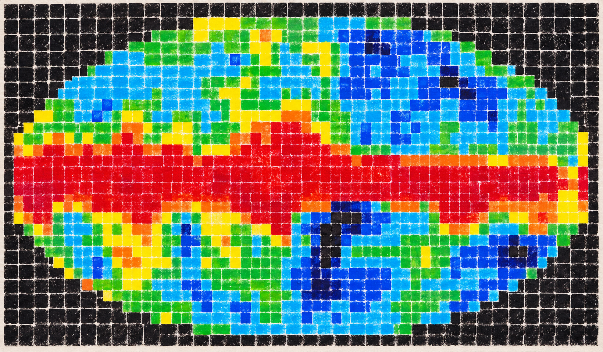
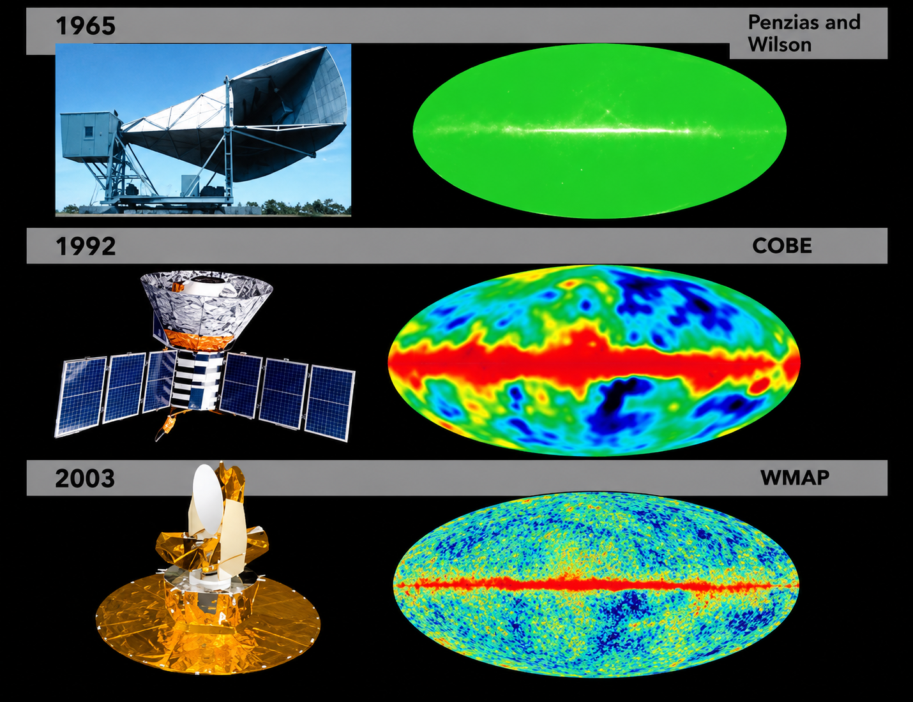

Observar
O participante entra em contato com a imagem astronômica e com o contexto científico que deu origem à visualização.

ARTE · CIÊNCIA · PARTICIPAÇÃO
Uma obra coletiva que transforma uma visualização científica do universo em experiência artística, educativa e participativa.
A PROPOSTA
Impressões do Universo é uma ação educativa desenvolvida pelo Brazilian Educational Radioastronomy Group (BERG), iniciativa do Instituto Vinciano de Artes e Ciências. A proposta parte de uma visualização do céu produzida a partir dos dados do instrumento DMR da missão COBE e a converte em uma matriz de cores reconstruída coletivamente.
Cada participante contribui com uma pequena parte da imagem por meio de impressões manuais coloridas. Isoladamente, cada marca é apenas um fragmento; reunidas, elas revelam uma representação do universo e tornam visível a relação entre dados, imagem, interpretação e construção coletiva do conhecimento.

A IMAGEM DE REFERÊNCIA
A matriz utilizada na ação tem como referência uma visualização do céu associada ao Differential Microwave Radiometer (DMR), um dos instrumentos da missão Cosmic Background Explorer (COBE).
A visualização científica é reinterpretada em uma paleta reduzida de cores e convertida em uma grade modular. Essa transformação permite que uma imagem produzida a partir de dados astronômicos seja reconstruída manualmente por diferentes participantes.
Imagem de referência utilizada no desenvolvimento da matriz visual da atividade.
COMO ACONTECE
O participante entra em contato com a imagem astronômica e com o contexto científico que deu origem à visualização.
Um pequeno módulo da matriz traduz parte da imagem em uma sequência de cores, permitindo perceber como uma representação complexa pode ser decomposta.
Cada participante imprime sua contribuição. Os módulos são reunidos progressivamente até formar a imagem coletiva completa.
A OBRA
Impressões do Universo não nasce pronta. Sua forma final depende das pessoas que participam de sua construção. As diferenças naturais entre as impressões, intensidades e texturas permanecem visíveis como parte da obra.
Assim, uma visualização científica originalmente produzida por instrumentos e processamento de dados passa por outra camada de interpretação: a experiência humana de reconstruí-la coletivamente.